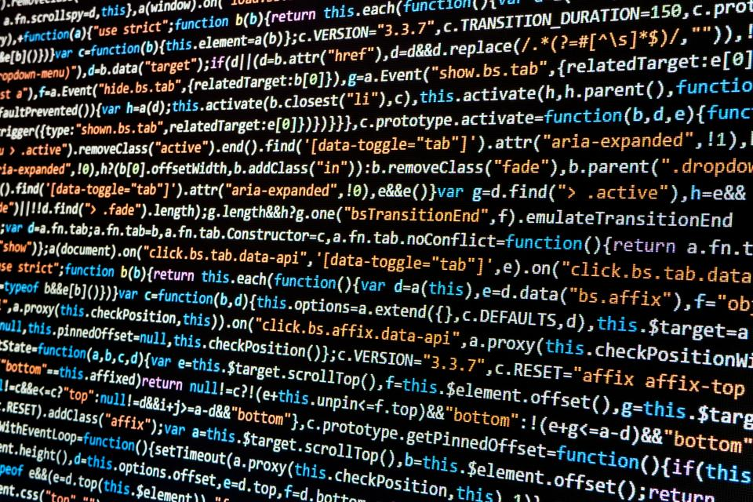

Exploring the Socio-Technical Dimensions of Our Digital World

Welcome to our LIS 500: Code and Power website. Here, you will be able to read about us and our journey in understanding technology, society, and how they intertwine.
Throughout LIS 500, we plan to learn how technology shapes our power systems and society, where we see who holds the most, the least, and inequalities within it. Identifying who benefits from technology, who is at a disadvantage, and how the use of technology impacts communities that utilize it.
This website demonstrates our interpretations of technology and how it blends with responsibility, equity, and accountability in ethical, social, and political contexts. We hope to learn how to think analytically about the use of technology — learning how it can be used for accountability and overall more accessible for all.